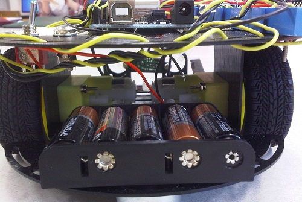

projets
-
Main robotique
Recherche de premier cycle ~~ C - C++
octobre 2015 - mars 2016Ma tâche est de travailler sur une main robotique (de type Barrett) dans un contexte de manipulation d'objets déformables. Je suis supervisé par le Dr Pierre Payeur. Plus de détails à venir, au cours de l'année scolaire.
-
Porte intelligente
projet IoT ~~ Particle Photon - électronique - mécanique - nodejs
novembre 2015 ...Avec un ami en génie mécanique, je bâtis une porte intelligente qui pourra être ouverte à l'aide d'un clavier numérique (1 à 9), un senseur d'empreintes digitales, par une webapp et bien évidemment avec une clé classique. À l'aide de l'application, il sera aussi possible de connaître l'état de la porte (ouverte / fermée ?), et de la fermer à distance si nécessaire.
Présentement, la webapp en développement roule sur nodejs et est hébergée sur heroku (certification SSL automatique). Nous documentons l'expérience le plus possible (liste des composants, schémas, calculs), et nous rendrons le tout disponible Open-Source une fois que nous aurons complété le projet.
-
Solveur de sudoku
projet perso - webapp ~~ JavaScript - nodejs - C++
 dépôt GitHub
dépôt GitHub
octobre 2015 ...Je bâtis un solveur de sudokus: donné une table remplie de valeurs de départ, l'algorithme répond avec une solution au sudoku (si celui-ci est valide, ce que l'application vérifie). Les deux premières vagues de l'algorithme se déroulent dans le fureteur (JavaScript), alors que la 3e et dernière vague, utilisant un algorithme génétique, est prévu de rouler en C++ sur le serveur.
Une fois cela complété, le but est d'ajouter une manière de détecter le sudoku de base à partir d'une photo (en utilisant un réseau de neurones), et d'ensuite le résoudre tel qu'expliqué précédemment.
-
Série des billets de polymère
Front-end webapp ~~ JavaScript & jQuery
page sur le graphisme - page sur les éléments de sécurité
juin 2015 - août 2015En tant que stagiaire à la Banque du Canada durant l'été 2015, un gros projet que j'ai eu pour la seconde moitié du stage a été de repenser les pages sur la série de billets de polymère (avec un autre étudiant COOP de uOttawa, Ryan Fitzgerald). Les objectifs étaient de rendre le contenu intéressant, accessible pour mobile ainsi qu'interactif, dans le but de remplacer la promotion papier.
Ryan et moi avons travaillé étroitement, lui travaillant sur le style, le contenu et la structure des pages, alors que je m'attardais à l'interactivité des pages, leur comportement et comment elles prendraient leur contenu dynamiquement.
Depuis, la plateforme que nous avons bâtie a été déployée à d'autres parties du site, et devrait être réutilisée pour les autres séries de billets.
-
Atmos (précédemment ClassMagnet)
Collaboration avec une startup ~~ JavaScript & Meteor
juin 2015 ...
J'ai décidé de participer au développement de la plateforme web d'une startup d'Ottawa nommée Atmos, qui a comme objectif de remplacer la technologie couramment offerte par les universités comme portail éducatif. J'avais à ce moment de l'expérience en JavaScript, mais c'étaient mes premiers pas avec ce langage du côté serveur. Nous utilisons Meteor, qui est une plateforme roulant uniquement sur ce langage et qui permet de facilement communiquer entre le côté serveur, le côté client et la base de donnée MongoDB.
À date, l'expérience s'est montrée une très belle occasion de travail collaboratif, ainsi qu'une familiarisation à la structure de GitHub: branches, «pull requests», «issues», etc.
-
TSI Mobile
Full-stack webapp ~~ JavaScript & jQuery - AWS - PHP - cURL
octobre 2014 - novembre 2014J'ai développé une webapp pour VIA rail Canada pour informer en temps réel si une ligne de trains ou les diverses lignes passant par une station spécifique sont à temps ou non. Ceci fut réalisé en montrant le temps d'«arrivée prévu» comparé à celui d'«arrivée estimé», et le ETA d'un train pour une certaine station. Toute l'information utilisée provient de fichiers XML téléchargés par le back-end à l'aide de cron et de cURL, fichiers qui sont ensuite «parsed». Cette application met à jour son contenu à chaque minute via des appels AJAX.
Pour VIA, de l'analytique pouvait définitivement être utile. J'ai écrit un script PHP pour analyser les données et les enregistrer dans une base de données, dans le but d'avoir un graphique du taux de performance de la journée pour chaque heure. De plus, j'ai réalisé une grille contenant chaque ligne de train en service, dans laquelle on peut aisément visualiser le taux de performance de chacune d'elles.
Ce fut une très bonne expérience pour bâtir une full-stack webapp: j'ai dû créer une instance EC2 sur AWS, apprendre comment se connecter à des serveurs distants via SSH, s'habituder à la ligne de commande Linux ainsi qu'à certains outils (comme cron), et installer des dépendances web.
-
Vector Calculator
Front-end Webapp ~~ JavaScript & jQuery - Bootstrap
dépôt GitHub
- site web
septembre 2014 - octobre 2014J'ai bâti cette webapp car j'était tanné d'effectuer de redondants calculs vectoriels - addition ou produit de vecteurs, conversion d'angles de radians à degrés et déterminer le vecteur unitaire. Ceci est un outil pratique pour accélérer ces calculs, et me permettait en plus de valider mes réponses. De plus, je voulais rendre le tout accessible en ligne, pour permettre à d'autres étudiants en mathématiques/génie de l'utiliser.
Ce fut une très bonne occasion pour développer ma première front-end webapp utilisant beaucoup de JavaScript et de jQuery, et pour en apprendre davantage sur le processus d'envoyer du contenu sur l'Internet (via git et Heroku).
-
Robot mobile autonome
Projet de physique ~~ Arduino - Électronique
dépôt GitHub
février 2014 - avril 2014Une partie de mon programme au Cégep était de compléter un projet de science au cours du dernier semestre, projet que je décidai de réaliser dans le département de physique. Avec l'aide d'un collègue, ayant ni l'un ni l'autre d'expérience en électronique (et moi ayant des connaissances de base en programmation JavaScript), nous décidâmes de bâtir un robot mobile autonome utilisant Arduino.
Mon coéquipier focalisa sur la circuiterie, alors que je travaillai sur la programmation du micro-contrôleur. Le robot consistait de 2 moteurs électriques indépendants à courant continu (CC), un Arduino, un senseur de distance, un senseur de collision, une DEL RVB (Rouge-Vert-Bleu), un double pont en H, et une alimentation de 7,5V (pour la Arduino) et de 12V (pour les moteurs). Le programme lisait continuellement les données des senseurs, effectuait une filtration basique des données acquises, et envoyait des voltages spécifiques aux moteurs et allumait une des couleurs de la DEL.
Ce fut une expérience très inspirante, me persuadant de poursuivre en génie logiciel. Non seulement cela, mais notre projet fut récompensé de la meilleure présentation scientifique de la journée (voici l'affiche en question!)
Si vous êtes curieux par rapport au robot, le dépôt GitHub contient le programme utilisé, une brève présentation ainsi que des vidéos du robot et du senseur de collision utilisé.
